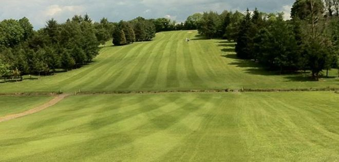
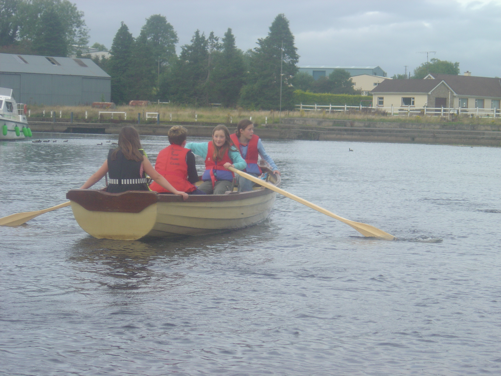
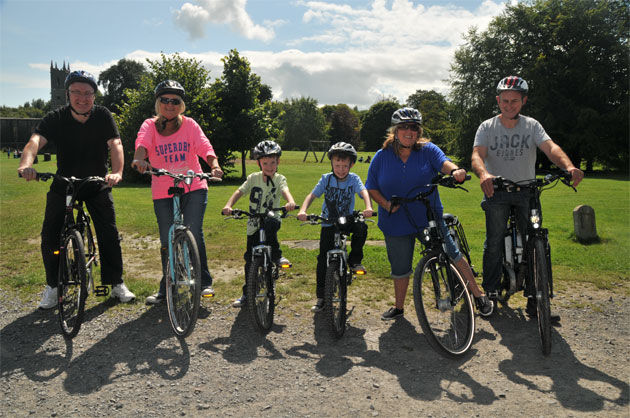
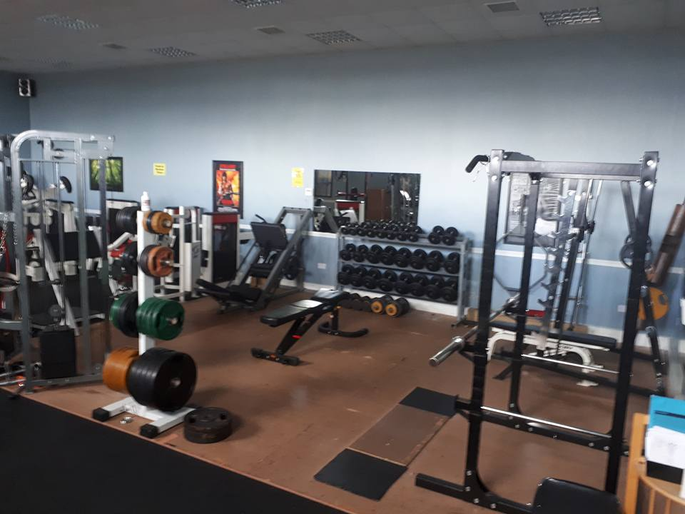
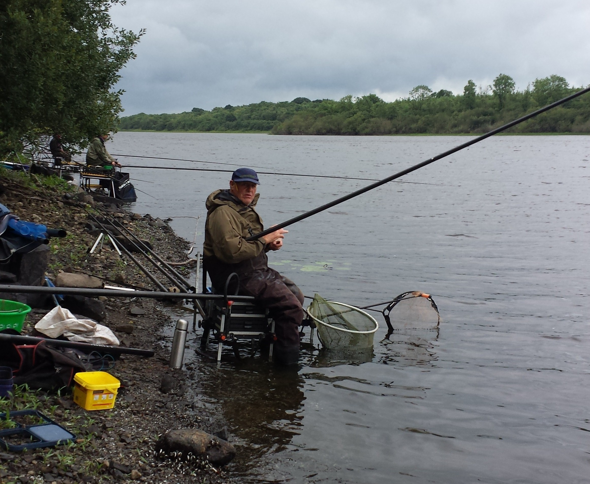
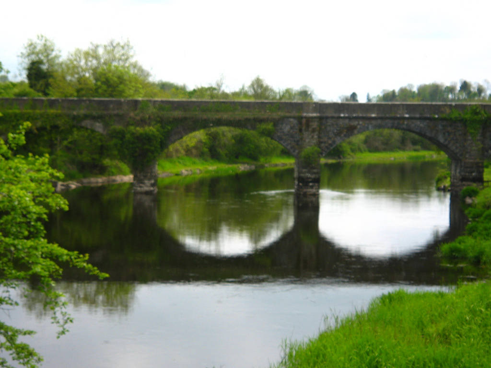

Things to do in Belturbet
Homepage
Belturbet is surrounded by the River Erne and numerous lakes and is considered to be one of irelands best fishing destinations. Apart from fishing there is lots of things to do and see in Belturbet. Here is a few in the list below.
Golfing- Belturbet golf club
Canoeing- River Erne, Belturbet
Bike Hire- Portruan, Belturbet
Gymnasium- Belturbet fitness centre
Angling- Belturbet town
Turbet Island- Belturbet town
Football- Rory O'Moore's park
Music- Comhaltas, Belturbet
     